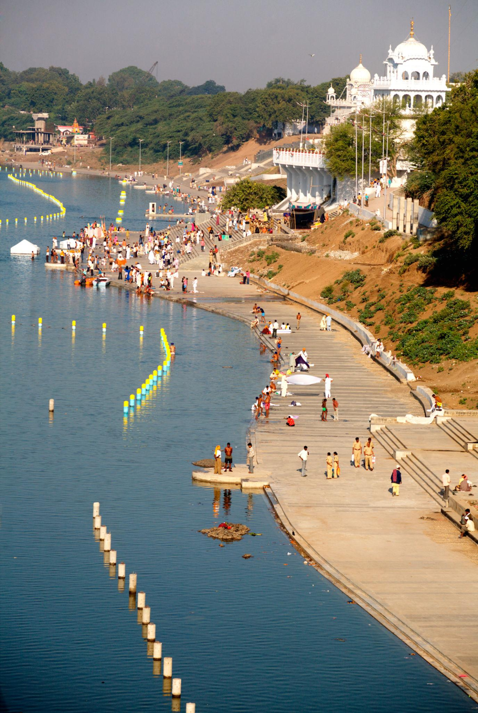
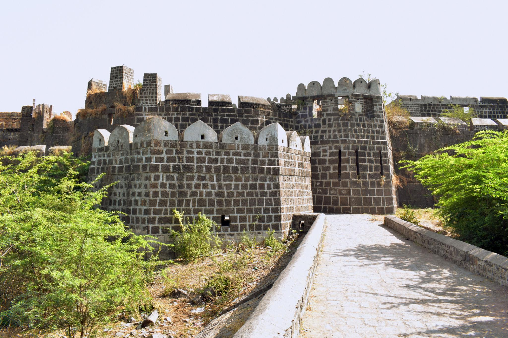
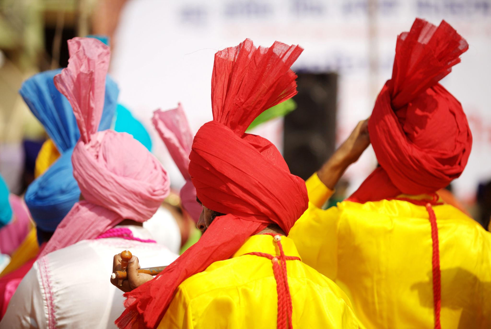
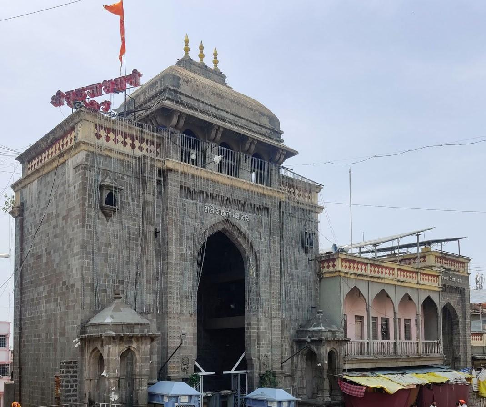
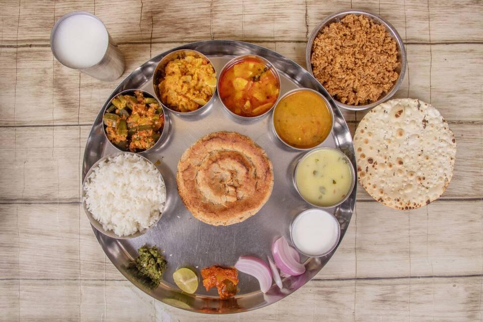
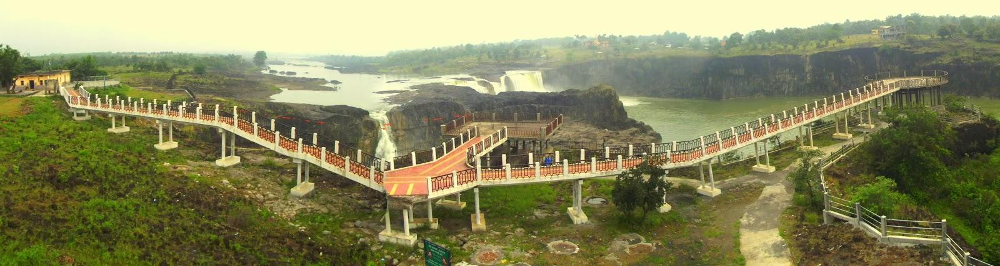
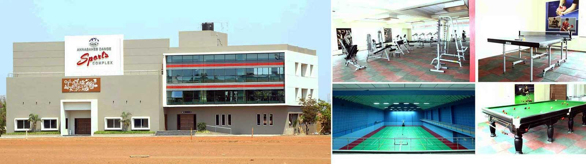

About

Situated in southeastern Maharashtra, Nanded is the administrative headquarters of the Nanded district. The city serves as a crucial commercial hub for the surrounding agricultural belts and is renowned for its excellent educational institutions, rapidly developing urban infrastructure, and serene riverside landscapes.
- Location: Southeastern Maharashtra, India, along the banks of the Godavari River.
- Famous as: The home of Takht Sachkhand Sri Hazur Abchalnagar Sahib, a deeply sacred pilgrimage site where Guru Gobind Singh Ji spent his final days.
History

Nanded holds a storied past that traces back to ancient times, with mentions in ancient Hindu scriptures and ties to the Nanda Dynasty and the Mauryan Empire. Archaeological findings, such as those at Shiur, indicate settlements from the 1st to 3rd centuries CE. It later came under the rule of the Chalukyas, Yadavas, the Bahmani Sultanate, and the Nizams of Hyderabad, eventually playing a notable role in India's independence struggle and the integration of Hyderabad into India.
- Nanded’s rich history spans from the ancient Maurya and Satavahana empires to medieval rule under the Chalukyas, Yadavas, and Mughals. Its most defining moment occurred in 1708 when Guru Gobind Singh Ji settled here and declared the Guru Granth Sahib as the eternal Sikh Guru. In modern times, the city fell under the control of the Nizams of Hyderabad until local freedom fighters liberated the region in 1948, allowing it to officially join the state of Maharashtra in 1960.
Culture

The cultural tapestry of Nanded is heavily influenced by its deep-rooted spiritual and linguistic traditions. Primarily featuring Marathi-speaking populations, the city is heavily influenced by Sikh culture, as it is the resting place of Guru Gobind Singh. Festivals like Diwali, Holi, and Gurpurab are celebrated with immense fervor, bringing together diverse communities in communal harmony and shared celebrations.
- Main Festivals: Diwali, Holi, Dussehra, Ganesh Chaturthi, and Gurpurab (celebrated with massive, vibrant processions at Hazur Sahib).
- Traditional Arts: Marathwada folk dances like Gondhal and Lavani, along with beautiful traditional handloom weaving.
- Language: Marathi is the primary language spoken, with Hindi, Punjabi, and Urdu also widely used by the diverse local community.
Tourism

Nanded is a vibrant tourism destination famous for its religious and historical landmarks. It is globally renowned for the Hazur Sahib, one of the five takhts in Sikhism. Other major attractions include the historic Nanded Fort situated along the Godavari, the ancient Kandhar Fort built by the Rashtrakutas, and the nearby stone Masjid of Biloli.
- Takht Sachkhand Sri Hazur Sahib (Holy Sikh shrine)
- Nanded Fort (Riverside ruins and scenic gardens)
- Kandhar Fort (Ancient castle with massive moats)
Famous Food

The local cuisine in Nanded is a delightful mix of Maharashtri, Hyderabadi, and Mughlai flavors. Staples include spicy Jowar Bhakri, Pithla, and Sev Bhaji. Due to the historical influence of the Nizams, the city is also famous for rich non-vegetarian dishes, including aromatic Biryanis and spicy curries. Street food items like Vada Pav, Misal Pav, and traditional sweets like Jalebi are immensely popular among locals and visitors.
- Famous Food: Spicy Techa (green chili paste), Zunka Bhakri (chickpea flour dish with millet flatbread), and aromatic Hyderabadi Biryani.
- Local Specialty: Imarti (a sweet, orange-colored fried ring soaked in sugar syrup) and traditional handloom Nanded Sarees.
Economy

Nanded’s economy is largely agrarian-driven, supported by the fertile basin of the Godavari River. The district is a significant producer of cotton, bananas, soybean, and sugarcane. In recent years, the city has witnessed rapid economic growth in agro-processing industries, handlooms, and tourism-related businesses, which significantly boost local employment through hospitality and transportation.
- Key Industries: Agro-processing mills, cotton ginning units, textile manufacturing, and tourism-focused hospitality businesses.
- Main Crops: Agro-processing mills, cotton ginning units, textile manufacturing, and tourism-focused hospitality businesses.
Environment

The environment in Nanded is characterized by a semi-arid, tropical climate with the Godavari River acting as its primary geographical and ecological lifeline. The district features a mix of deciduous forests, sprawling farmlands, and small hills. Local conservation efforts and watershed development projects are crucial in maintaining the region's agricultural balance and sustaining regional wildlife.
- Climate: Semi-arid and tropical, featuring hot summers, heavy monsoon rains from June to September, and pleasant winters.
- Key Rivers: The Godavari River flows directly through the city, heavily supported by its main local tributary, the Asna River.
- Protected Areas: The scenic wetlands around the Tipeshwar Wildlife Sanctuary and Painganga Wildlife Sanctuary sit just along the broader regional borders.
Sports

Sports and physical fitness hold a celebrated place in Nanded, with the district promoting various athletic and traditional games. The city is home to several sports complexes and academies that foster talent in cricket, wrestling (kushti), kho-kho, and athletics. Local schools and universities actively host tournaments, encouraging youth participation and building a strong sports culture in the region.
- Traditional Sports: Kushti (Indian mud wrestling), Kho-Kho, and Kabaddi are highly popular across local villages and schools.
- Focus: Building youth fitness through sports academies, organizing local wrestling tournaments, and improving school sports facilities.